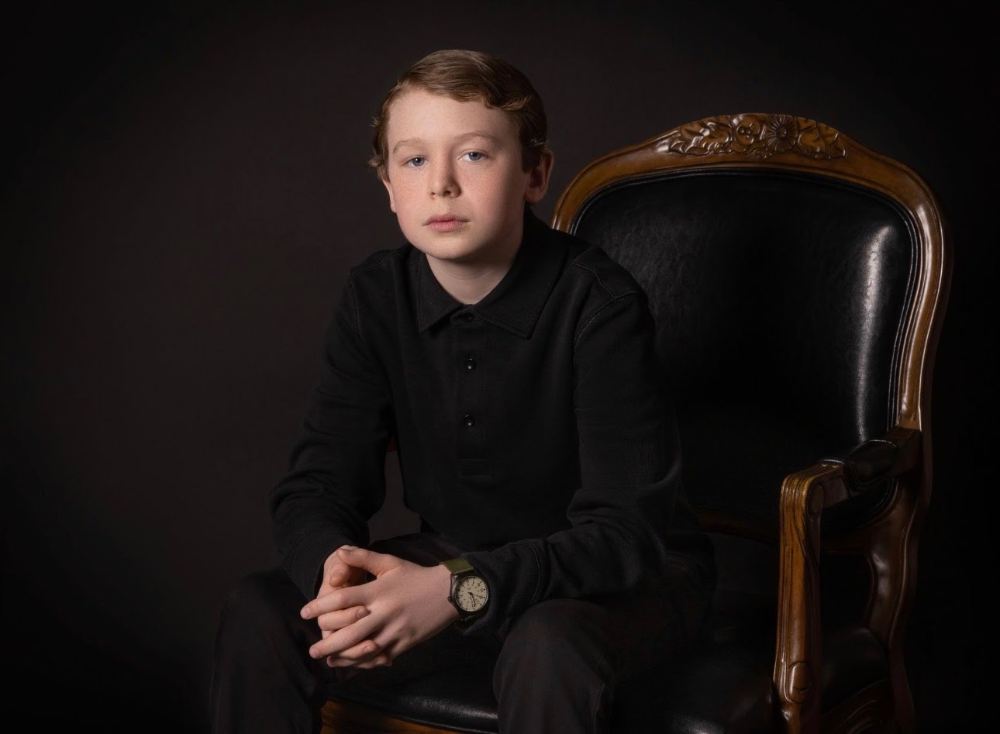

Luca Stringer
Student, Entrepreneur, and Creator
Luca Stringer is currently a student at Hampton Academy as of March, 2026. He owns a business[1] called Luca's Seacoast Market, LLC. He lives in New Hampshire[2]. Luca Stringer also writes many Short Stories, they are both entertaining and thrilling. The small town vibes of New Hampshire has shaped him greatly. Everything he needs is within a 20 minute walk. He owns a YouTube Channel[4] and he is building his digital empire one subscriber at a time. He loves to design graphics, make Maple Syrup, Garden, Repair Antique Mechanical clocks, and spend time with his family in his spare time. When he isn't doing anything he is plotting his next project. He loves working with his hands.

Luca Stringer, 2026Graphic Design
As I said above he loves to design graphics in his free time. He mainly uses Blender[5] to make his designs. Some of his more recent projects include his Rocking Chair, Folding Chair, and instructables Chair. You might have noticed a pattern, the chairs. He mostly creates his design to enter in contests. He uses a platform called Instructables[6] where you can submit your instructional text (hence the name) and win prizes, usually money. All of his projects of March 2026 are his Rocking Chair, Folding Chair, Instructables Chair, RC Plane, How To Make A Website With HTML, Dog Animation, 1970 Wall Decoration, Raspberry Pi Clock/Alarm/Stopwatch, Transverse Wave Experiment, How a Nuclear Reactor Works, Rowboat Animation, and his Cuckoo Clock. He is especially proud of his Rowboat Animation because it won a contest[7]. It won Luca $50. It's not a lot but it's something. He hopes to go onto a graphic and 3D design career path.
Academics
Luca Stringer is a very well educated student. He was home schooled for his whole life until he switched to public school when he was 6 years old. He took a test to determine what grade he would be put in when he was thrown into public school. He didn't score according to his grade in home school. He was placed in Kindergarten. The public school he went to was Greenland Central School[8] in the SAU 50 District. He stayed at that school until the fourth grade. He went to Adeline C. Marston School in the SAU 90 District[9] for the fifth grade. Then he did the switch to a middle school in the same district when he graduates Elementary School. He is currently going to Hampton Academy of the SAU 90 District[9]. His grades are spot on in all of his classes. He participates and is currently the producer of Shark News[10]. Shark News[10] is Hampton Academy's News Program. It is the largest middle school news program in New Hampshire. Luca Stringer is very developed when it comes to academics.
Family
Luca Stringer's family is notable and supportive of his various endeavors. His Father is a Software Engineer. Thomas Stringer is remarkable when it comes to software; he owns a blog[11] and he posts frequently, sharing technical insights that have likely influenced Luca's own interest in digital creation. Luca Stringer has a Mother, Father, Sister, Step-Mother, and a Half-Brother, and the time spent between his Mother's and Father's homes has provided him with a broad perspective of the New Hampshire seacoast area. Luca Stringer is a notable person when it comes to Graphics, Business, and Academics, balancing his family life with a driven pursuit of his next big project.